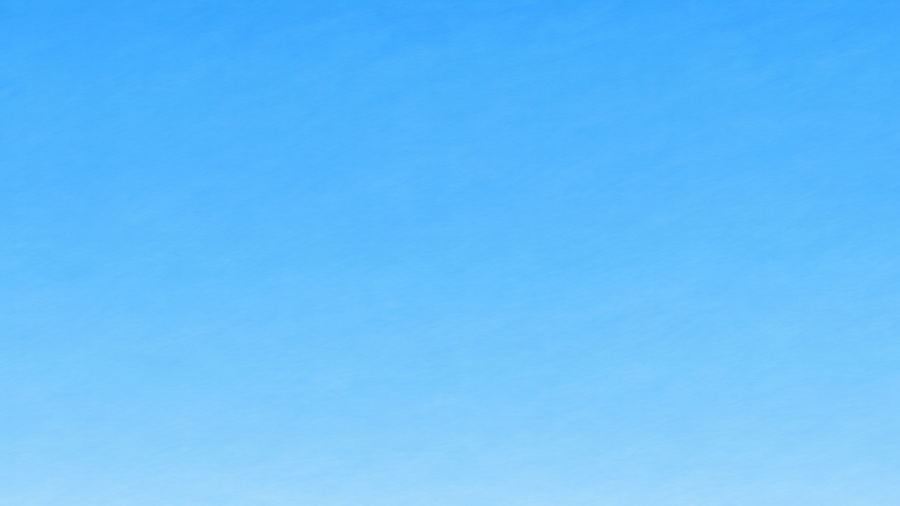
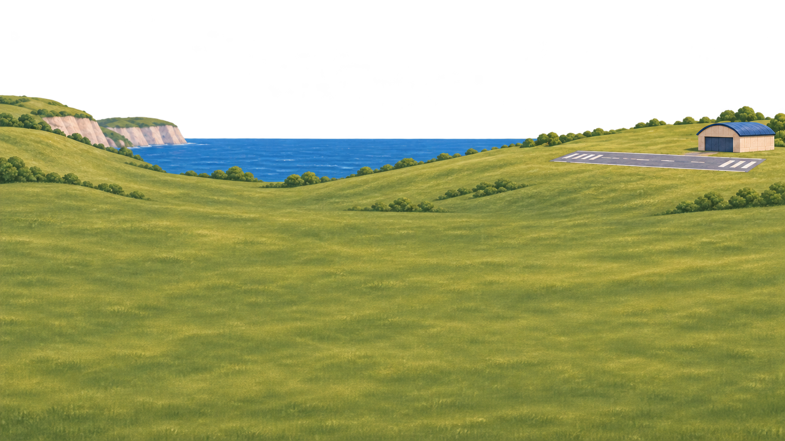
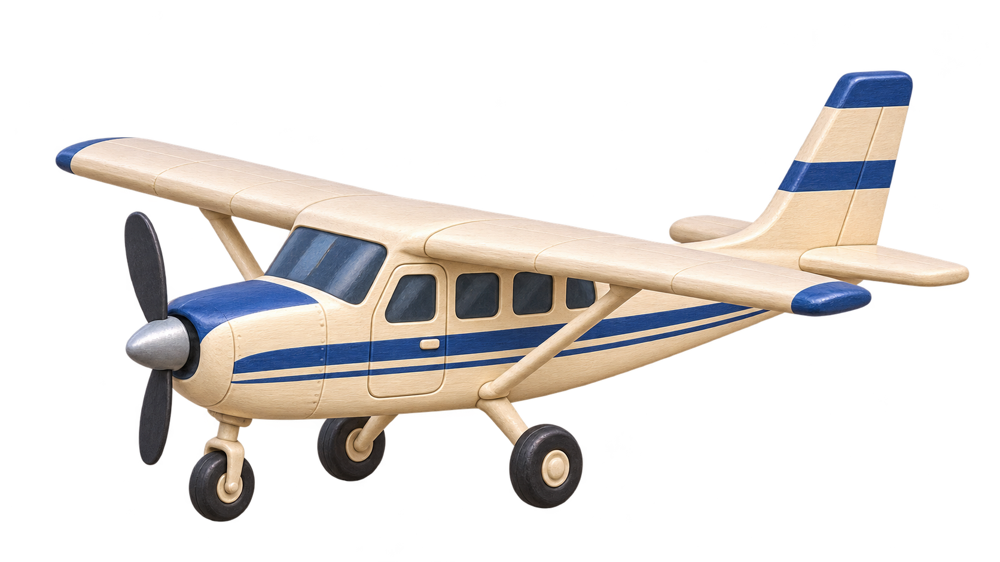
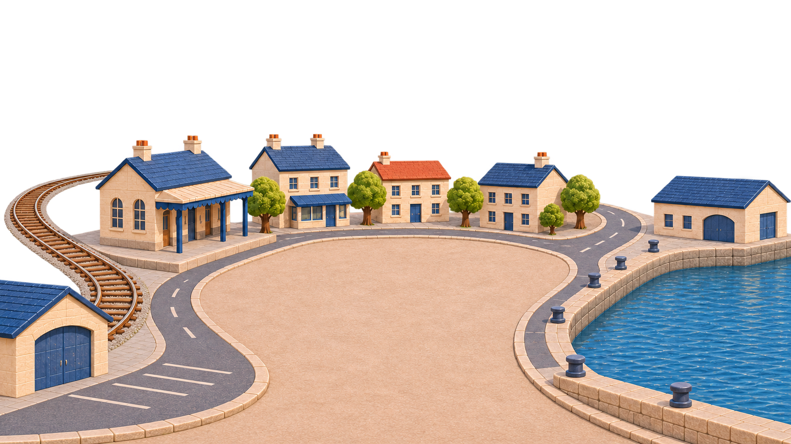
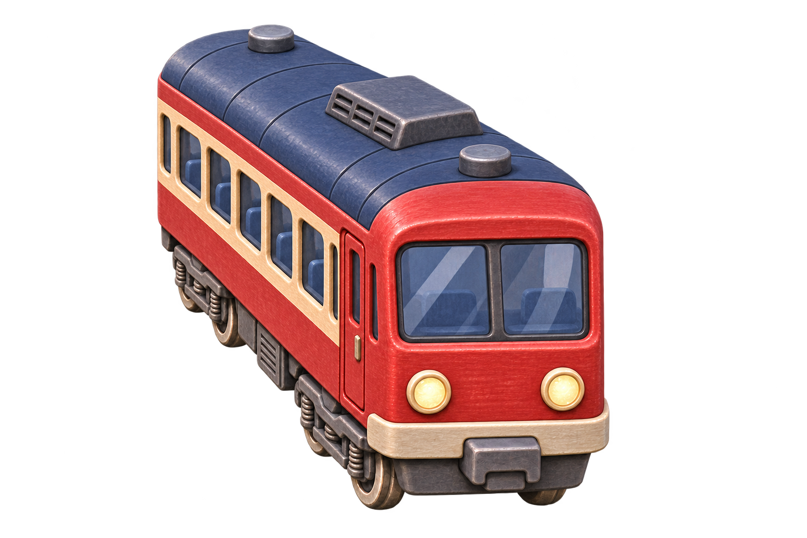
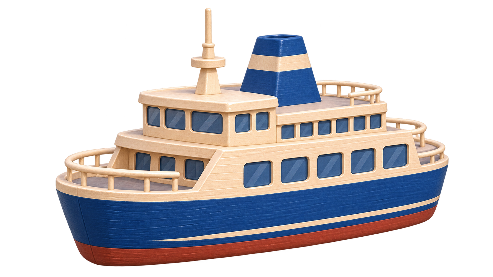
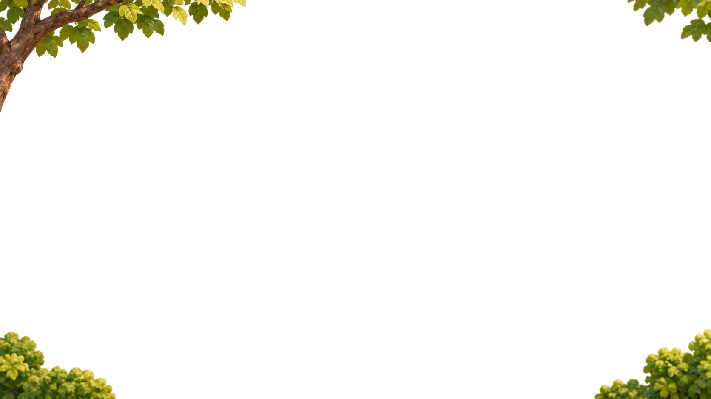
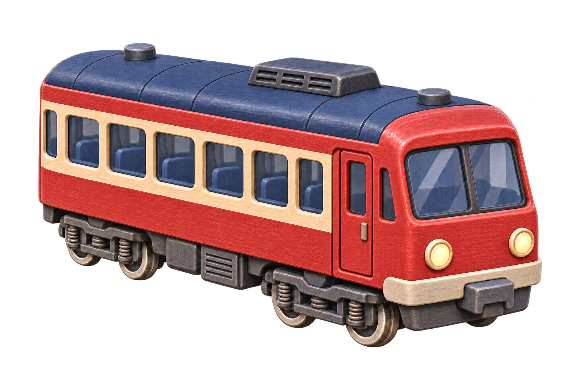

Miniature World · actual transparent artwork for review. Four separate scenery planes, four vehicles with an additional railcar view, and an independent cloud.







Static asset fit review at the shared source camera. These files have not been connected to the landing page. Movement and complete-cycle contact checks follow asset approval.

These are production candidates awaiting your approval. This board displays the actual files; it is not a replacement landing mockup. The existing landing preview and game remain unchanged. The separate interactive driving game remains planned.